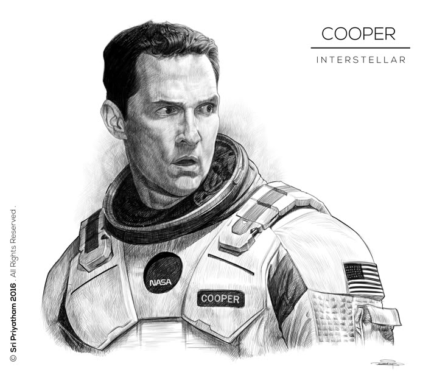
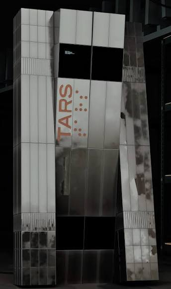

Joseph Cooper

Ex piloto de la NASA que lidera la misión espacial para salvar a la humanidad.
Género: Ciencia Ficción / Drama Espacial

Un grupo de científicos y exploradores viajan a través de un agujero de gusano en busca de un nuevo hogar para la humanidad ante la inminente extinción de la Tierra.

Ex piloto de la NASA que lidera la misión espacial para salvar a la humanidad.
Bióloga y científica espacial encargada del aspecto biológico del proyecto.

Inteligencia artificial táctica de apoyo a la misión y asistencia técnica.